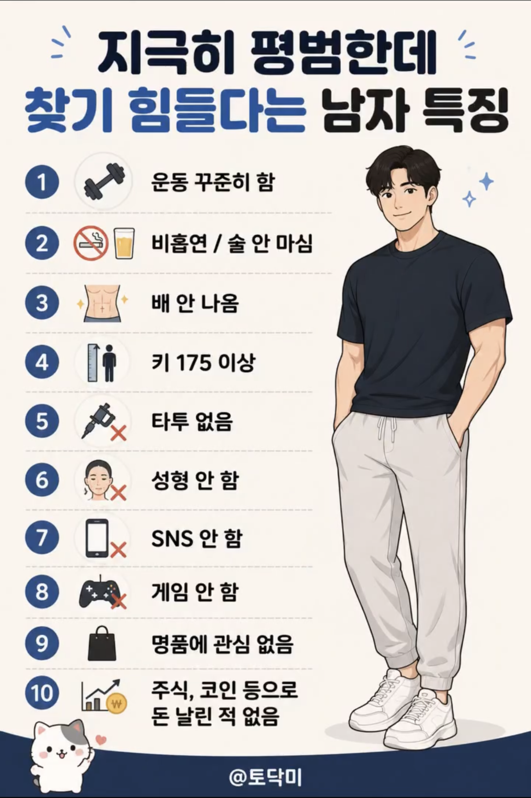

그나마 현실적이긴 하네

그나마 현실적이긴 하네
여자입장에선 찾기 힘들겠다 게이면 모를까
2.꼴초
8.내 유일한 친구 게임..ㅠ
9.혀영심있어서 외제차 명품 좋아함
10개 해당 안되는거 어케 하노;;
막상 주변에 있으면 매력없다고 싫어함
각각 해당하는 사람은 꽤 있지
문제는 여러 개 해당하는 사람은 희귀하고, 전부 해당되는 사람은 거의 없음
이새낀 뭐하고 삼? ㅋㅋㅋㅋㅋㅋㅋㅋㅋ
헬스하는애가 만들었네
주식으로 돈 날린게 문제네 ㅠ
여자가만든게 아닌거같은데
SNS 안함은 여자들 보기엔 마이너스임
우리형 100점이네.. 게임은 콘솔로 젤다 이런거 출시할때 반짝만 하고 주식으로 집삿고 키 185고 대겹이고 근데 눈이 존~~~나 높아
1번빼고 나인데 운동도 육아하느라 안함
나는 평범하다
2,8번은 쉽지 않네
1~4만해도 90%는 없어지겠다
9, 10번이 결정적으로 해당되네
모쏠이 썼니보네
남자가 성형 sns 명품을 왜함?
저런 사람도 로봇도 아니고 욕망을 해소할수 있는 일탈같은건 하나씩은 있더라
이런사람 다 결혼했으
1번부터 평범이 아닌데?